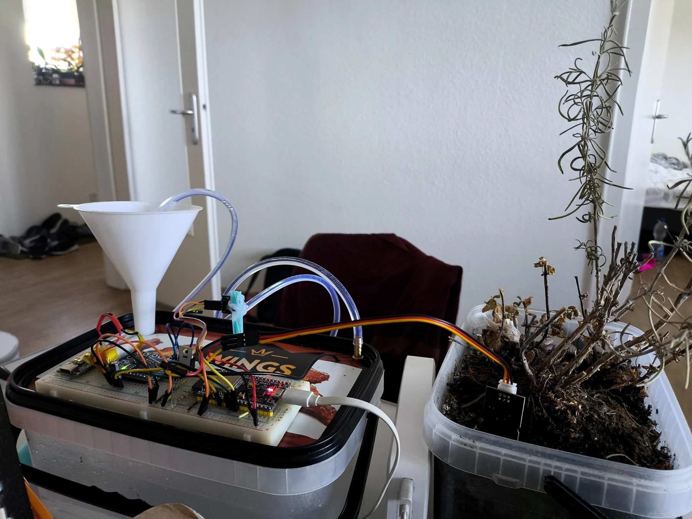
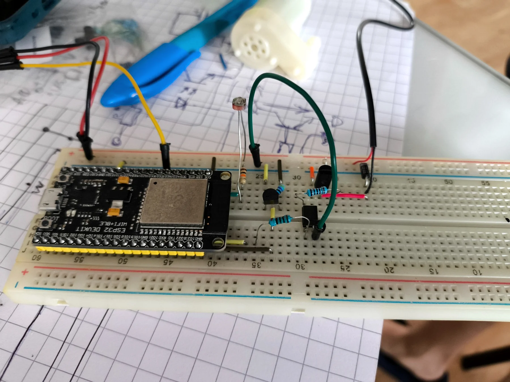
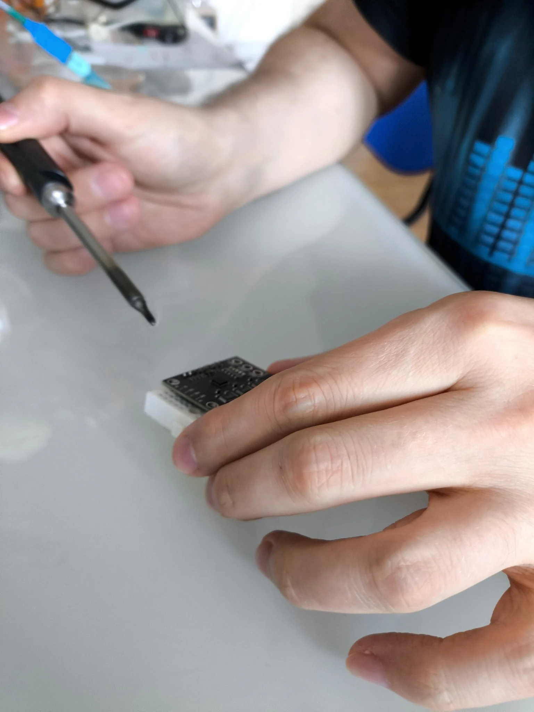
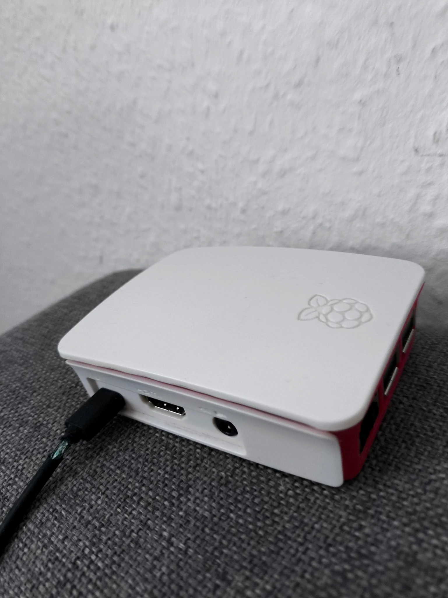
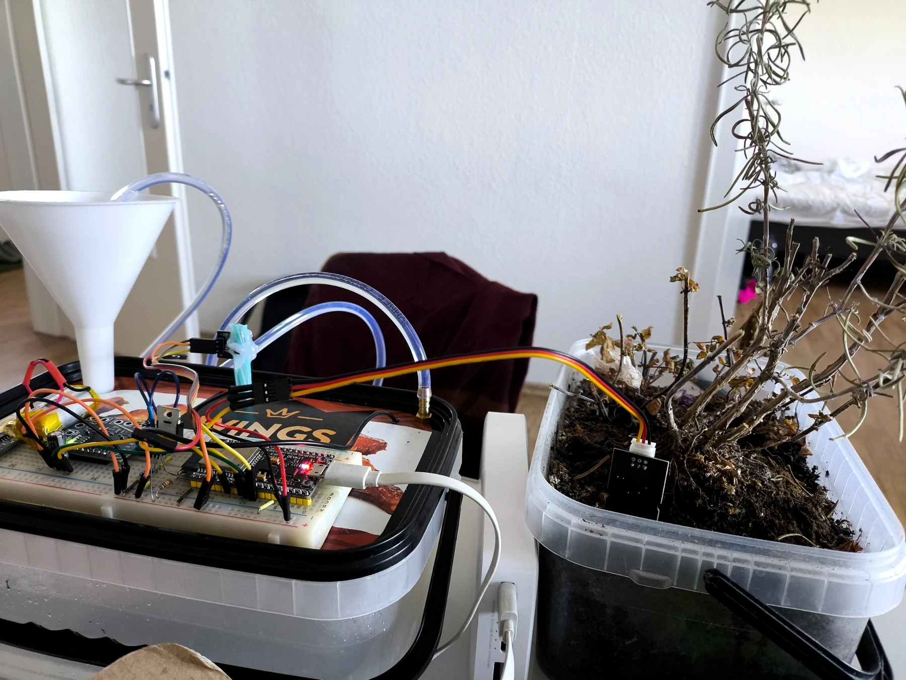
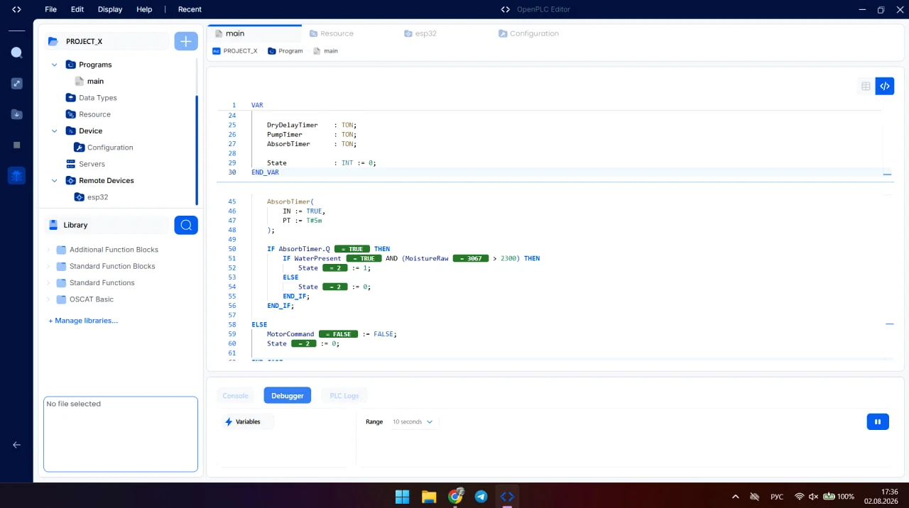

Industrial automation prototype
Smart Irrigation System
A working PLC-controlled watering system built from scratch with ESP32, Raspberry Pi, OpenPLC and Modbus TCP.
ESP32OpenPLCRaspberry PiModbus TCP
Explore the project↓

The idea
Plants should not depend on memory.
The system monitors soil conditions, verifies that water is available and lets the PLC decide when and how long the pump should run.
System architecture
Embedded sensing. Industrial logic.
ESP32 handles physical I/O. OpenPLC on Raspberry Pi executes the control algorithm. Modbus TCP connects both layers.
signals
Modbus TCP
command
3474
Typical dry-soil reading
2200
Reading after watering
6 s
Dry-condition confirmation
5 min
Water absorption interval
Development journey
Built, tested and debugged step by step.

01
First breadboard prototype
The first stage established sensor input, transistor switching and ESP32 firmware on a modular breadboard setup.

02
Hands-on hardware work
Modules were soldered and adapted manually. Measurement problems were investigated using raw register data and electrical tests.

03
PLC runtime integration
Raspberry Pi hosts OpenPLC Runtime while the ESP32 is mapped as a Modbus TCP remote device.

04
First autonomous watering
The complete chain — sensing, PLC decision, command transmission and pump actuation — was successfully tested.
PLC logic
The controller decides. The ESP32 executes.
Control logic is implemented in IEC 61131-3 Structured Text. A state machine confirms dry soil, runs timed irrigation and waits for water absorption before measuring again.
- Modbus input and output mapping
- Timed state-machine control
- Tank-empty safety interlock
- Debugging with live PLC variables

Interface concept
A compact view of the running system.
Demonstration values based on recorded prototype measurements.
Smart IrrigationSystem online
Engineering challenges
The problems are part of the project.
Modbus mapping
Aligned PLC addresses, offsets, function codes and ESP32 registers.
SolvedHall sensor logic
Verified signal polarity and mapped the tank state into PLC safety logic.
SolvedPLC timing logic
Built a state machine for confirmation, irrigation and absorption intervals.
SolvedCurrent measurement
INA3221 voltage monitoring works; accurate current calibration remains under investigation.
In progressGallery
A real development process, not a studio mock-up.
Roadmap
The prototype is working. Development continues.
✓
Automatic moisture-based irrigation
✓
Water tank monitoring
✓
OpenPLC and Modbus TCP integration
→
Pump current calibration and fault detection
→
Historical charts and event logging
→
Telegram status and alarm notifications
→
Automatic lighting using the existing light sensor
About the developer
Danylo Kovalov
Automation and PLC projects
I build practical automation projects that connect sensors, PLC logic and real hardware.
View GitHub profile ↗